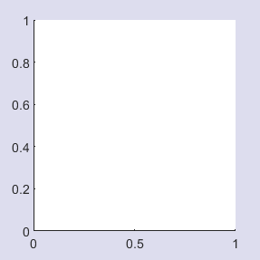

2.1: Position vs OuterPosition 
Typically one
would position some axes using their OuterPosition so that the
axis labels, title and other annotations are all contained within the
specified area. Sometimes, particularly if drawing images, one might want
to instead make the axes canvas (the white bit!) fill the specified area.
This is done by setting the Position property instead.
For example:
figure
axes( 'Units', 'Normalized', 'OuterPosition', [0 0 1 1] )

figure
axes( 'Units', 'Normalized', 'Position', [0 0 1 1] )
© 2023 The MathWorks Ltd
• Terms of Use
• Patents
• Trademarks